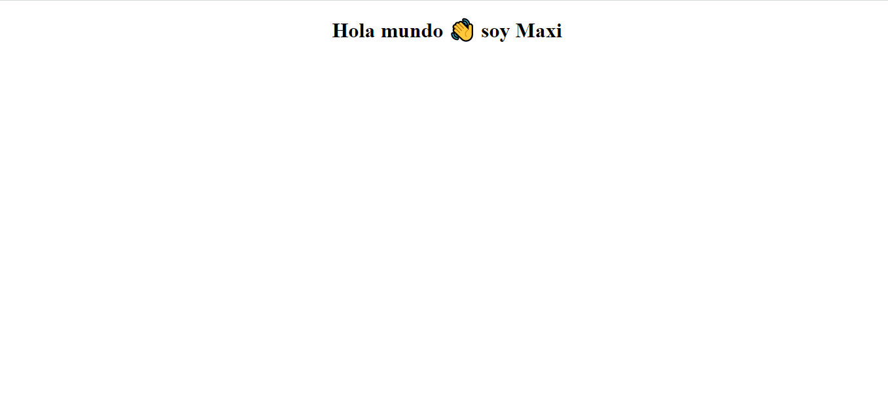
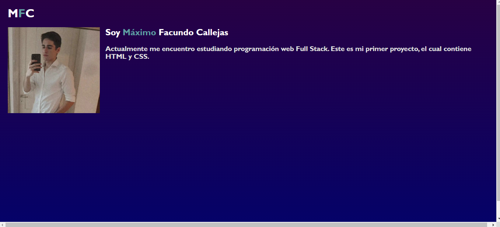
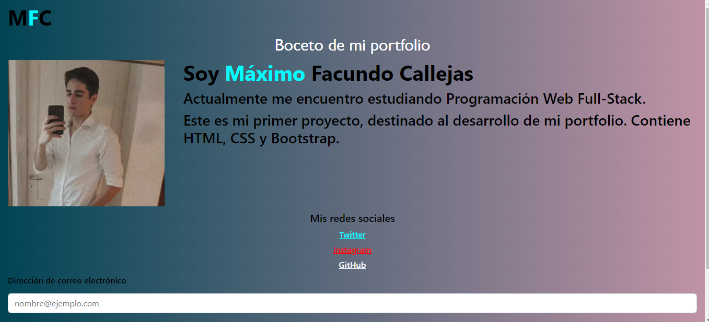

<h1 class="margin"><span>Proyectos:</span></h1>
<div class="margin">
    <div *ngFor="let Experiencia of expe">
        <h4><span>{{Experiencia.nombreE}}: </span>{{Experiencia.descripcionE}}</h4>
        <h4>{{Experiencia.tecnologias}}</h4>
    </div>
    <h4>Adjunto un pequeño recorrido de imágenes de lo que fue la evolución de este, <span>mi primer proyecto</span>, desde que 
        empecé a programar por primera vez, hasta el día de hoy.
    </h4>
</div>
<div id="carouselExampleIndicators" class="carousel slide">
    <div class="carousel-indicators" align="center">
        <button type="button" data-bs-target="#carouselExampleIndicators" data-bs-slide-to="0" class="active" aria-current="true" aria-label="Slide 1"></button>
        <button type="button" data-bs-target="#carouselExampleIndicators" data-bs-slide-to="1" aria-label="Slide 2"></button>
        <button type="button" data-bs-target="#carouselExampleIndicators" data-bs-slide-to="2" aria-label="Slide 3"></button>
        <button type="button" data-bs-target="#carouselExampleIndicators" data-bs-slide-to="3" aria-label="Slide 4"></button>
    </div>
    <div class="carousel-inner" align="center">
        <div class="carousel-item active">
        
    </div>
    <div class="carousel-item">
        
    </div>
    <div class="carousel-item">
        
    </div>
    <div class="carousel-item">
        
    </div>
    </div>
    <button class="carousel-control-prev" type="button" data-bs-target="#carouselExampleIndicators" data-bs-slide="prev">
    <span class="carousel-control-prev-icon" aria-hidden="true"></span>
    <span class="visually-hidden">Anterior</span>
    </button>
    <button class="carousel-control-next" type="button" data-bs-target="#carouselExampleIndicators" data-bs-slide="next">
    <span class="carousel-control-next-icon" aria-hidden="true"></span>
    <span class="visually-hidden">Siguiente</span>
    </button>
</div>